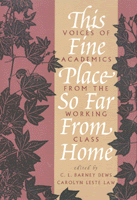

<body bgcolor="#FFFFFF" text="#000000" link="#0000FF" vlink="#CC0000" alink="#CC0000"><center><hr width="350" size="1" align="center" noshade>Affecting stories of faculty and graduate students from working-class on their struggles in academia<hr width="350" size="1" align="center" noshade><p><a href="https://cdcshoppingcart.uchicago.edu/Cart/ChicagoBook.aspx?ISBN=9781566392907&&PRESS=temple" target="_top">Buy this book!</a> | <a href="https://cdcshoppingcart.uchicago.edu/Cart/Cart.aspx?PRESS=temple" target="_top">View Cart</a> | <a href="https://cdcshoppingcart.uchicago.edu/Cart/Cart.aspx?PRESS=temple" target="_top">Check Out</a></p><p></p></center><!--none//--><h1>This Fine Place So Far from Home</h1>
<H2>Voices of Academics from the Working Class</H2>
<h3>edited by C. L. Barney Dews and Carolyn Leste Law</h3>
<P>cloth 1-56639-290-X $69.95, Apr 95, <FONT COLOR=#990033>Out of Stock Unavailable</FONT>
<br>paper 1-56639-291-8 $35.95, Apr 95, <FONT COLOR=#990033>Available</FONT>
<br>Electronic Book 1-43990-448-0 $35.95 <FONT COLOR=#990033>Out of Stock Unavailable</FONT>
<BR> 352 pp
6x9
</P><BLOCKQUOTE><I>"A collection of essays by faculty members and several graduate students, this book provides [a] glimpse of the class system in the United States and how it plays out in colleges and universities....[This] is a moving book, beautifully written."</I>
<br>&#151<b><I>Contemporary Sociology</I></b><I></I></BLOCKQUOTE>
<p>These autobiographical and analytical essays by a diverse group of professors and graduate students from working-class families reveal an academic world in which "blue-collar work is invisible." Describing conflict and frustration, the contributors expose a divisive middle-class bias in the university setting. Many talk openly about how little they understood about the hierarchy and processes of higher education, while others explore how their experiences now affect their relationships with their own students. They all have in common the anguish of choosing to hide their working-class background, to keep the language of home out of the classroom and the ideas of school away from home. These startlingly personal stories highlight the fissure between a working-class upbringing and the more privileged values of the institution.
<BR>&nbsp;<h2>Excerpt</h2><P>Excerpt available at <a href="http://www.temple.edu/tempress">www.temple.edu/tempress</a></p>
<BR>&nbsp;<h2>Contents</h2><P>
<p>Acknowledgments
<br>Introduction &#150 Carolyn Leste Law
<p><b>Part I: Lives Are Not Essays</b>
<br>1. Stupid Rich Bastards &#150 Laurel Johnson Black
<br>2. A Real Class Act: Searching for Identity in the "Classless" Society &#150 Julie A. Charlip
<br>3. Bronx Syndrome &#150 Stephen Garger
<br>4. The Screenwriter's Tale &#150 Jennifer Lawler
<br>5. You Were Raised Better Than That &#150 Naton Leslie
<br>6. In the Shadow of My Old Kentucky Home &#150 George T. Martin, Jr.
<br>7. <I>Todos Vuelven</I>: From Potrero Hill to UCLA &#150 Rosa María Pegueros
<br>8. Another Day's Journey: An African American in Higher Education &#150 Gloria D. Warren
<p><b>Part II: Border States</b>
<br>9. Useful Knowledge &#150 Mary Cappello
<br>10. A Carpenter's Daughter &#150 Renny Christopher
<br>11. Paper Mills &#150 Heather J. Hicks
<br>12. The Social Construction of a Working-Class Academic &#150 Dwight Lang
<br>13. Working-Class Women as Academics: Seeing in Two Directions, Awkwardly &#150 Nancy LaPaglia
<br>14. Ambivalent Maybe &#150 Wilson J. Moses
<br>15. Class Matters: Symbolic Boundaries and Cultural Exclusion &#150 Sharon O'Dair
<br>16. Nowhere at Home: Toward a Phenomenology of Working-Class Consciousness &#150 Christine Overall
<br>17. Past Voices, Present Speakers &#150 Donna Burns Phillips
<p><b>Part III: The Intellectual Worker/The Academic Workplace</b>
<br>18. Workin' at the U. &#150 Milan Kovacovic
<br>19. Class, Composition, and Reform in Departments of English: A Personal Account &#150 Raymond A. Mazurek
<br>20. Complicity in Class Codes: The Exclusionary Function of Education &#150 Irvin Peckham
<br>21. Is There a Working-Class History? &#150 William A. Pelz
<br>22. Psychology's Class Blindness: Investment in the Status Quo &#150 Deborah Piper
<br>23. Working It Out: Values, Perspectives, and Autobiography &#150 John Sumser
<p><b>Part IV: Awayward Mobility</b>
<br>24. The Work of Professing (A Letter to Home) &#150 Michael Schwalbe
<p>Afterword &#150 C.L. Barney Dews
<br>About the Contributors
</P><BR>&nbsp;<H2>About the Author(s)</H2>
<P><b>C. L. Barney Dews</b> is visiting Assistant Professor of American Literature in the English and Foreign Languages Department, University of West Florida.</P>
<P><b>Carolyn Leste Law</b> is a Doctoral Candidate in English at the University of Minnesota.
<p>They have also co-edited <i><a href="1376_reg.html" target="_top">Out in the South</a></i> (Temple).</P>
<BR><H2>Subject Categories</H2>
<p><A HREF="/tempress/biography.html" TARGET="_top">Biography/Memoir/Autobiography</a>
<BR><A HREF="/tempress/sociology.html" TARGET="_top">Sociology</a>
<BR><A HREF="/tempress/education.html" TARGET="_top">Education</a>
</p>
<p align="center"><a href="https://cdcshoppingcart.uchicago.edu/Cart/ChicagoBook.aspx?ISBN=9781566392907&&PRESS=temple" target="_top">Buy this book!</a> | <a href="https://cdcshoppingcart.uchicago.edu/Cart/Cart.aspx?PRESS=temple" target="_top">View Cart</a> | <a href="https://cdcshoppingcart.uchicago.edu/Cart/Cart.aspx?PRESS=temple" target="_top">Check Out</a></p><p><font face="Arial" size="1"><a href="copyright.html" onMouseOver="window.status='Web Copyright Policy';return true;" onMouseOut="window.status=''" title="Web Copyright Policy">&copy;</a> 2015 <a href="http://www.temple.edu" target="new" onMouseOver="window.status='Link to Temple University home page';return true;" onMouseOut="window.status=''" title="Link to Temple University home page">Temple University</a>. All Rights Reserved. http://www.temple.edu/tempress/titles/1024_reg.html</font></p>